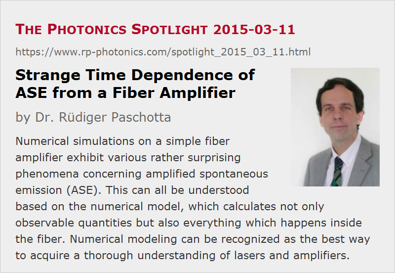

Strange Time Dependence of ASE from a Fiber Amplifier
Posted on 2015-03-11 as a part of the Photonics Spotlight (available as e-mail newsletter!)
Permanent link: https://www.rp-photonics.com/spotlight_2015_03_11.html
Author: Dr. Rüdiger Paschotta, RP Photonics Consulting GmbH
Abstract: Numerical simulations on a simple fiber amplifier exhibit various rather surprising phenomena concerning amplified spontaneous emission (ASE). This can all be understood based on the numerical model, which calculates not only observable quantities but also everything which happens inside the fiber. Numerical modeling can be recognized as the best way to acquire a thorough understanding of lasers and amplifiers.

Imagine that you have an ytterbium-doped fiber amplifier, where you suddenly switch on a constant pump power, and there is no signal input. What would you expect for the time dependence of the amplified spontaneous emission (ASE)? Probably nothing particularly interesting: presumably, that the ASE power is initially extremely weak and then monotonically rises, finally approaching a certain steady-state value within a time which is a few times the upper-state lifetime.
Well, that is all correct, but I guess that you will be quite surprised about some of the details. Let us first start with the pump wavelength of 940 nm. The following diagram shows how the Yb excitation (averaged along the fiber) and the forward and backward ASE powers rise with time. (I have quickly simulated this with our RP Fiber Power software.)
It is quite surprising to see that after half a millisecond, the backward ASE power has already reached ≈86% of its final value, whereas the forward ASE power has just started to come up. So the ratio of forward and backward ASE power changes enormously with time.
One may initially be attempted just not to believe that, but it is indeed possible to find out what happens by looking at some more details. The following diagram shows how the powers are distributed in the fiber after 0.5 ms of pumping:
One can see that backward ASE comes up only quite close to the left end, whereas forward ASE (going from left to right) gets strong in the middle of the fiber but is then mostly reabsorbed before it reaches the right end. This is because the pump power is largely exhausted in the second half of the fiber, so that the ytterbium excitation is low, and the ASE – arising mostly around the strong emission and absorption peak at 975 nm – is strongly reabsorbed. The ASE powers also act back on the ytterbium excitation (via gain saturation), which now leads to a strong spatial dependence on the absorption coefficient for the pump light – which in turn explains the strange position dependence of the pump power. Because overall the ytterbium excitation occurs mostly in the left half of the fiber, the distribution of ASE powers between forward and backward direction is strongly asymmetric. Essentially, backward ASE can profit from significant fluorescence light being generated in the right half (despite negative net gain), whereas forward ASE cannot profit from such an effect.
After 2 ms of pumping, the ytterbium excitation has extended much more into the fiber, because the increasing excitation reduces the pump absorption, so that the pump light can further propagate into the fiber:
The less asymmetric distribution of the ytterbium excitation then also makes the ASE power distribution between forward and backward direction less asymmetric.
Let us now change the pump wavelength from 940 nm to 975 nm. The following diagram can shows the rise of Yb excitation and ASE powers, which however now looks totally different:
After about 0.6 ms, the rise of excitation and ASE powers stops quite suddenly – another strange phenomenon, which was not observed in the previous case. In order to understand this, we again look at the spatial distributions after 2 ms of pumping:
The ytterbium excitation now stays nearly constant at ≈50% throughout the whole fiber, because at 975 nm the emission and absorption cross sections of Yb are both very large and approximately equal; we are in a strongly saturated regime, where a high absorption and stimulated emission rate work against each other, and spontaneous emission and ASE are not very relevant for the Yb excitation. The highly symmetric profile of the Yb excitation leads to nearly identical ASE powers in forward and backward direction. An inspection of the ASE spectra (not shown here) shows that the ASE is now mostly around 1030 nm.
Working Without a Numerical Model?
The shown examples demonstrate that the behavior of such amplifiers is rather complicated – even though I have chosen a really simple case: a single-mode fiber doped with ytterbium, having only two relevant level manifolds, a single pump wavelength and no signal input.
Some people would skip any modeling attempts and just run into the lab, trying out what happens. I doubt that they would have any reasonable chance to find out what is going on here. After all, one can observe the time-dependent output powers, but one cannot look into the fiber in order to inspect the optical powers and excitation densities at all times. (At most, one might observe the time dependence of the fluorescence power outside the fiber at different positions in order to get at least some more inputs for your reasoning.)
It is quite clear that without numerical modeling most people would be confronted with absolutely surprising observations which would make no real sense to them. Under such circumstances, it is hard to either efficiently optimize the operation parameters of an amplifier product or to do proper scientific research; both simply need more insight into what actually happens. A numerical model is by far the best tool to get there; it calculates not only what you can easily observe, but also much more (e.g., what exactly happens inside the fiber). I like to say “a model is transparent” – you can look into everything.
You can now easily guess how I myself acquired a very detailed understanding of lasers and amplifiers: by playing with various models and inspecting their results until I understood everything. One could never get there just by reading textbooks or papers, or by building such devices. Therefore, I also warmly recommend numerical modeling as an excellent tool for educational purposes.
This article is a posting of the Photonics Spotlight, authored by Dr. Rüdiger Paschotta. You may link to this page and cite it, because its location is permanent. See also the RP Photonics Encyclopedia.
Note that you can also receive the articles in the form of a newsletter or with an RSS feed.
Questions and Comments from Users
Here you can submit questions and comments. As far as they get accepted by the author, they will appear above this paragraph together with the author’s answer. The author will decide on acceptance based on certain criteria. Essentially, the issue must be of sufficiently broad interest.
Please do not enter personal data here; we would otherwise delete it soon. (See also our privacy declaration.) If you wish to receive personal feedback or consultancy from the author, please contact him e.g. via e-mail.
By submitting the information, you give your consent to the potential publication of your inputs on our website according to our rules. (If you later retract your consent, we will delete those inputs.) As your inputs are first reviewed by the author, they may be published with some delay.
|  |
If you like this page, please share the link with your friends and colleagues, e.g. via social media:
These sharing buttons are implemented in a privacy-friendly way!